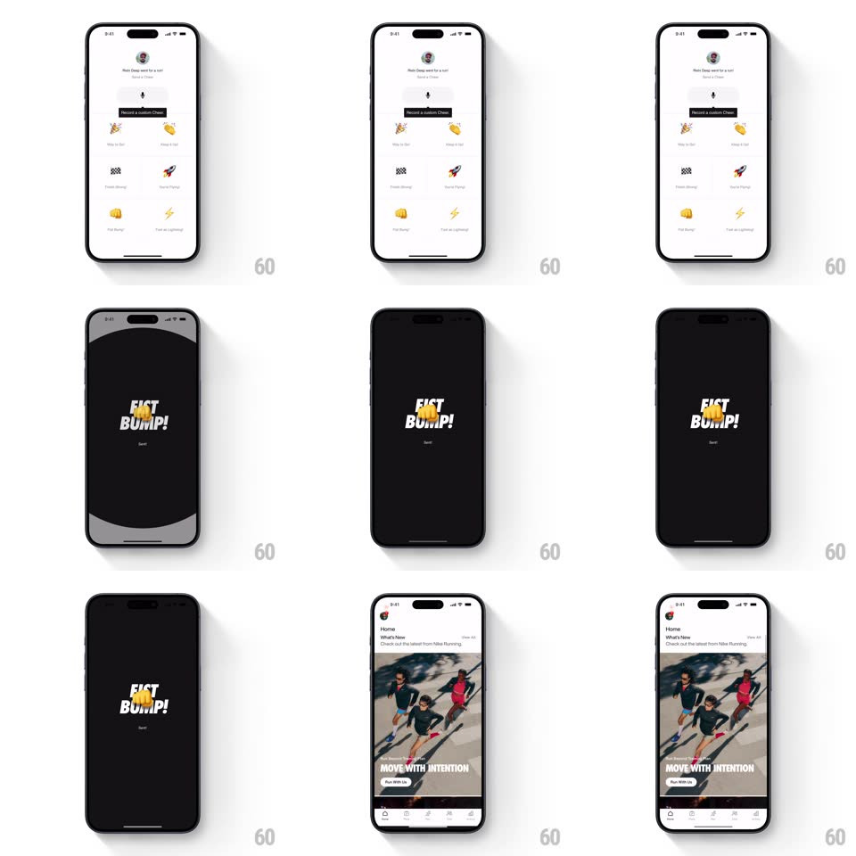

Media
Frame-by-frame

Rebuild this animation 1:1: Nike Run Club's send-a-cheer confirmation - picking a cheer from the emoji grid flashes a full-screen black takeover with giant italic "FIST BUMP!" and the emoji, which then slides down to reveal the home feed.

Rebuild this animation 1:1: Nike Run Club's send-a-cheer confirmation - picking a cheer from the emoji grid flashes a full-screen black takeover with giant italic "FIST BUMP!" and the emoji, which then slides down to reveal the home feed.
## Integration
Integration: stack-agnostic spec - springs given as stiffness/damping, timed motions as duration + curve; map every value to your framework and animation library of choice.
## Scene
Cheer sheet: friend header ("Neda Klaas went for a run"), "Record a Custom Cheer" mic tile, and a grid of preset cheers (party horn, clap, rocket, fist bump, lightning, flag). Takeover: black full-screen with bold italic stacked words + the sent emoji. Home: feed with "MOVE WITH INTENTION" hero.
## Motion spec
Pattern: full-screen celebration takeover.
- Tap a preset: the tile pops (scale 0.92 -> 1, 150ms) with haptic, then the black takeover slides up over everything (spring ~300/26, ~400ms).
- The cheer text ("FIST BUMP!") slams in word by word - each word scales from 1.4 -> 1 with a hard spring (~380/18, ~200ms each, 120ms apart), the emoji dropping in after with a bounce (~300/16, ~400ms).
- Takeover holds ~1.4s, then the whole screen slides down and away (450ms ease-in), revealing the home feed already loaded underneath.
- Feed content fades up (200ms) as the takeover exits.
## Calibration
- The takeover is fully black with knockout white type - no chrome, no buttons.
- Exit is a downward slide (gravity), not a fade - the celebration "drops" off screen.
## Reduced motion
Takeover fades in/out; text appears whole.
## Don't miss
- The words are set in heavy italic caps, stacked and slightly overlapping.
- The emoji sent is the one tapped - the takeover reflects the pick.